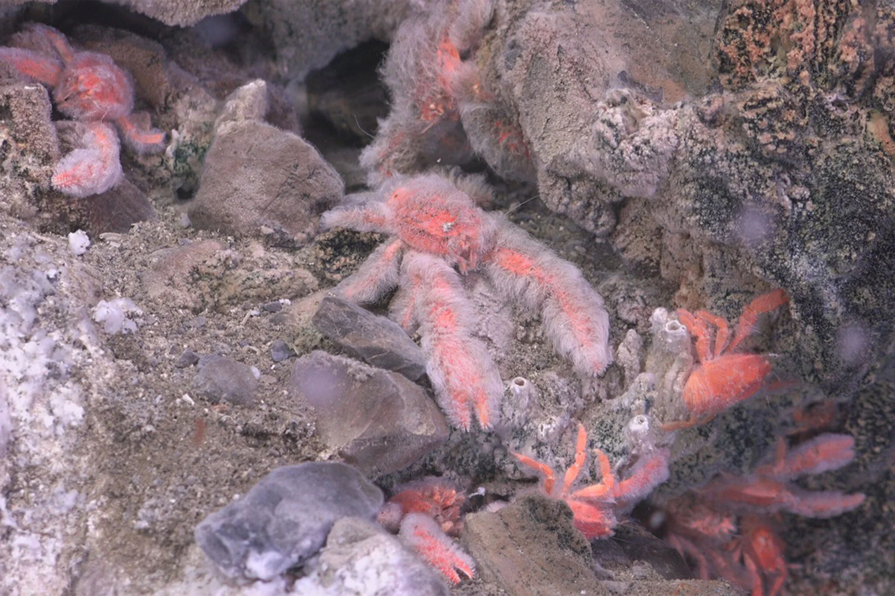
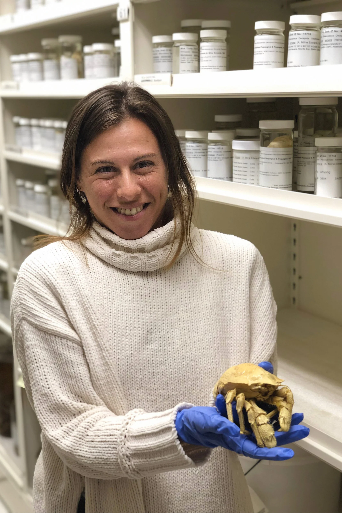

Corrida para catalogar e estudar a biodiversidade do fundo do mar
Publicado por Roni Wellington 02-04-2023 | Astronomia
Uma das novas espécies de lagosta atarracada, Munidopsis girguisi, é encontrada na costa da Califórnia. Essa lagosta atarracada em particular recebeu esse nome em homenagem a Peter Girguis, professor de biologia evolutiva e orgânica em Harvard.
Pesquisadores encontram 5 novas espécies de criaturas de difícil acesso em meio à escassez de conhecimento, preocupações crescentes de interesse comercial podem causar extinções
Paula Rodríguez-Flores sempre foi obcecada por invertebrados. “Muito, muito obcecado”, disse o pesquisador de pós-doutorado em biodiversidade, que trabalha no Museu de Zoologia Comparada de Harvard .
Quando jovem, em sua terra natal, Madri, Rodríguez-Flores capturava besouros em potes e levava seus achados para a cama com ela. Na faculdade, ela voltou sua atenção para invertebrados marinhos, como esponjas do mar, ouriços, camarões e lagostas, especialidade de Rodríguez-Flores. Em um novo estudo publicado na Invertebrate Systematics, ela e uma equipe de pesquisadores identificaram cinco novas espécies de lagostas de profundidade na família Munidopsidae . Existem mais de mil espécies conhecidas de lagosta atarracada – que estão mais próximas dos caranguejos eremitas do que da lagosta do Maine – e dezenas de novas espécies são descobertas a cada ano, o que sugere que sua verdadeira diversidade ainda é pouco compreendida.
Agora, com esta última descoberta de novas espécies (uma das quais se chama Munidopsis girguisi em homenagem a Peter Girguis , professor de biologia evolutiva e organísmica em Harvard), os autores do estudo pedem uma reclassificação de todas as espécies de lagostas atarracadas para melhor capturar seus distribuição geográfica e história evolutiva. Essa mudança é importante para mais do que apenas a lagosta atarracada: muitas das criaturas que espreitam nas profundezas do oceano permanecem um mistério, e novas atividades humanas, como a mineração no fundo do oceano, podem em breve ameaçar sua própria existência. Tudo isso aumenta a urgência do desejo dos cientistas de descobrir e estudar esses animais antes que seja tarde demais.
“A diversidade do fundo do mar é muito, muito desconhecida”, disse Rodríguez-Flores. “Conhecemos talvez 10%, ou até menos, da fauna marinha. É o habitat mais inexplorado do mundo.”
Com as indústrias ansiosas para explorar o potencial econômico dessa área, a lacuna de conhecimento do fundo do mar pode ter um preço: “As pessoas querem explorar o oceano profundo sem saber o que há nessa área”, disse Rodríguez-Flores. “Se não pesquisarmos isso, talvez algumas espécies sejam extintas quando essa exploração começar.”
Para sua pesquisa, Paula Rodríguez-Flores utilizou as coleções encontradas no Museu de Zoologia Comparada de Harvard.
Seu estudo, que foi uma colaboração entre Gonzalo Giribet , professor de biologia organísmica e evolutiva e diretor do Museu de Zoologia Comparada, e a Scripps Institution of Oceanography , representa uma contribuição bem-vinda ao corpo limitado de conhecimento, resultante em parte de obstáculos para fazer pesquisas em profundidades oceânicas extremas.
As lagostas atarracadas que Rodríguez-Flores e sua equipe identificaram vivem cerca de 2.000 a 5.000 quilômetros, ou cerca de 3 milhas, abaixo da superfície do oceano. “É muito frio, muito fundo, muita pressão e comida espalhada”, disse Rodríguez-Flores, tornando-se um desafio para qualquer criatura (assim como para as tecnologias de exploração do fundo do mar) sobreviver.
Quatro das novas espécies – que são, como muitas criaturas do fundo do mar, brancas como fantasmas e quase cegas – foram encontradas usando veículos operados remotamente e um veículo ocupado por humanos chamado Alvin, que explorou fontes hidrotermais, infiltrações frias e outros fundos marinhos. habitats em Galápagos, Costa Rica e Califórnia na última década.
Mas o quinto foi uma surpresa.
Quando Rodríguez-Flores ingressou no MCZ, ela estudou a coleção de espécimes de lagosta atarracada do museu, concentrando-se naquelas da família Munidopsidae . Esse grupo vive quase exclusivamente em plataformas continentais de profundidade, encostas e na zona abissal – a área de 3.000 metros ou mais abaixo da superfície do oceano.
As lagostas atarracadas podem viver em quase qualquer lugar – em águas rasas, recifes de corais, fontes hidrotermais de profundidade – e vêm em todo um arco-íris de cores, algumas delas meio psicodélicas. Uma espécie, por exemplo, é fúcsia com bolinhas roxas; outro é amarelo-limão com uma faixa branca nas costas.
“A diversidade do mar profundo é muito, muito desconhecida. Conhecemos talvez 10%, ou até menos, da fauna marinha. É o habitat mais inexplorado do mundo.”
Mas a relativamente monótona família Munidopsidae, de águas profundas, é difícil de estudar porque os cientistas só conseguiram coletar um pequeno número de espécimes, e estes estão espalhados por todo o mundo. Rodríguez-Flores só poderia aprender muito com a coleção de Harvard.
Felizmente, as instituições Smithsonian e Scripps tinham o que ela precisava. E no Scripps, Rodríguez-Flores não apenas reuniu mais dados sobre a espécie, mas também descobriu que um espécime, coletado em 1990, era inteiramente novo. Usando o sequenciamento de DNA e micro-tomografias, ela e seus colaboradores estudaram como essas novas espécies se relacionavam com muitas outras famílias de lagostas que vivem em todo o mundo.
“Para entender a história evolutiva das lagostas atarracadas, temos que comparar, genética e morfologicamente, todas as espécies que conhecemos”, disse Rodríguez-Flores. “E descobrimos que a classificação taxonômica atual não reflete a história evolutiva, então temos que revisar a classificação”.
As descobertas incluíram a possibilidade de que as lagostas de profundidade possam incluir menos espécies do que se pensava anteriormente e colonizar uma região geográfica mais ampla dentro da aparentemente árida zona abissal.
Uma revisão taxonômica tão grande leva tempo, viagens e dinheiro. Rodríguez-Flores passou anos visitando coleções em todo o mundo para examinar o maior número possível de espécimes. E, no entanto, foi esse trabalho que ajudou a desenterrar as cinco novas espécies, que ela e a equipe batizaram com o nome de três de seus colaboradores internacionais, um dos navios de exploração (Nautilus) e Girguis, que ajudou a coletar as espécies que agora levam seu nome.
“Ele estava muito animado para coletar esta espécie porque é realmente especial”, disse Rodríguez-Flores. “É rosa e felpudo. Eles são tão bonitinhos."
Eles podem ser fofos, mas não são tão saborosos, fato que os autores se sentiram compelidos a incluir em seu estudo porque, como disse Rodríguez-Flores, eles são questionados o tempo todo. “Todo mundo me pergunta se eu como esses crustáceos”, disse ela. “Eles podem ser saborosos se você os usar para sopa, mas não são como lagostas. Eles são quase todos pernas.
Saboroso ou não, Rodríguez-Flores anseia por mais lagosta atarracada. Ela espera publicar uma nova taxonomia proposta no próximo ano e continuará procurando os dois terços esperados das espécies que permanecem no escuro.
“Ainda não sabemos quantas espécies vivem em nosso mundo”, disse ela, falando não apenas de seu último amor invertebrado, a lagosta atarracada, mas de todas as criaturas da Terra. “Cerca de um milhão de espécies já enfrentam uma ameaça de extinção, e cerca de 40% de todas as espécies na Terra podem estar ameaçadas ou levadas à extinção até o ano 2100. Com essa taxa atual de extinção, é provável que a maioria das espécies extinguir-se antes de ser descoberto.”
A menos, é claro, que Rodríguez-Flores consiga alcançá-los primeiro.
Artigo Original:The Harvard Gazette
Sobre o Autor

RoniWellington
Desenvolvedor Back-End com background multidisciplinar, sempre aprendendo mais para estar menos errado. Nas horas vagas me dedico à escrita, filosofia, ciência e às vezes um rolê de skate, corrida ou ciclismo.
 Contato
Contato Mensagem
MensagemDica de Livros

Astronomy Today
Autor: Chaisson Mcmillan ano:
Origens – 14 bilhões de anos de evolução cósmica
Autor: Neil deGrasse Tyson ano: 1ª edição(1 junho 2015)
Cosmos - Cosmos reúne alguns dos conhecimentos mais avançados da época sobre a natureza, a vida e o Universo
Autor: Carl Sagan Ano:Canais no YouTube

AstroTubers
ASTROTUBERS Astronomia
SpaceToday
Conteúdo científico temas variados
Ciência Todo Dia
Pedro Loos Conteúdo científicoPosts Relacionados


Como grandes cérebros são feitos
Como grandes cérebros são feitos Novo estudo rastreia o desenvolvimento
Ver Post